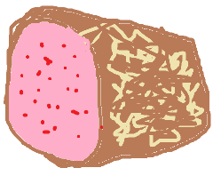

In a medium saucepan, bring 1 1/3 cups water to a boil. Add rice, and stir. Reduce heat, cover, and simmer for 20 minutes. In a small bowl, mix the rice vinegar, sugar,and salt. Blend the mixture into the rice.
Preheat oven to 300 degrees F (150 degrees C). On a medium baking sheet, heat nori in the preheated oven 1 to 2 minutes, until warm.
Center one sheet nori on a bamboo sushi mat. Wet your hands. Using your hands, spread a thin layer of rice on the sheet of nori, and press into a thin layer. Arrange 1/4 of the cucumber, ginger, avocado, and imitation crabmeat in a line down the center of the rice. Lift the end of the mat, and gently roll it over the ingredients, pressing gently. Roll it forward to make a complete roll. Repeat with remaining ingredients.
Cut each roll into 4 to 6 slices using a wet, sharp knife.
Africa
Egypt
Egyptian Style Colocasia

Ingredients
Stew
1 bag of frozen colocasia
2 medium tomatoes, chopped
1 onion,chopped
2 vegetable bouillon cubes
1 liter of water
Greens
1 tablespoon of oil
1 teaspoon salt
1 teaspoon coriander
4_5 garlic cloves, minced
1 packet of chard (usually included in the bag of frozen colocasia)
Directions
Pour the frozen colocasia into the pot and keep the chard aside. Frozen Swiss Chard (comes with the frozen colocasia)
Add the tomatoes, onion, bouillon cubes and water to the pot. Put the colocasia and veggies in the pot.
Bring to a boil. Cover and simmer for about 20 minutes. Stir occasionally.
In a separate shallow pan or skillet, heat the oil.
Add the garlic, salt, coriander and chard. Stir fry for 3 minutes or until garlic is tender and slightly golden. Preparing the greens.
Add the greens to the vegetable stew.
Simmer another 5_10 minutes.
Serve over rice or with baladi (pita) bread.
Australia
Lamingtons
Ingredients
Cake
2 cups all_purpose flour
4 teaspoons baking powder
1/8 teaspoon salt
1/2 cup butter, room temperature
3/4 cup white sugar1 teaspoon vanilla extract
2 eggs, room temperature
1/2 cup milk
Icing
4 cups confectioners' sugar, sifted
1/3 cup cocoa powder, sifted
2 tablespoons butter, melted
1/2 cup warm milk
1 pound unsweetened dried coconut
Directions
Preheat oven to 375 degrees F (190 degrees C) . Grease and flour an 8x12_inch pan.
Sift together the flour, baking powder, and salt. Set aside.
Beat 1/2 cup butter and 3/4 cup sugar with an electric mixer in a large bowl until light and fluffy. The mixture should be noticeably lighter in color. Add the room_temperature eggs one at a time,allowing each egg to blend into the butter mixture before adding the next. Beat in the vanilla with the last egg. Pour in the flour mixture alternately with the milk, mixing until just incorporated.
Pour batter into the prepared pan. Bake in the preheated oven until a toothpick inserted into the cake comes out clean, 30 to 40 minutes. Let stand 5 minutes, then turn out onto a wire rack and cool completely. Wrap with plastic wrap and store overnight at room temperature to give the cake a chance to firm up before slicing.
To make the icing: In a large bowl, combine confectioners' sugar and cocoa. Add the melted butter and warm milk and mix well to create a fluid, but not too runny, icing.
Cut the cake into 24 squares. Place parchment paper or waxed paper on a work surface, and set a wire rack on the paper. Pour the shredded coconut into a shallow bowl. Using a fork, dip each square into the icing, coating all sides, then roll it in the coconut. Place onto rack to dry. Continue until all lamingtons are coated.
Europe
Italy
Spaghetti and Meatballs
Ingredients
1 lb. spaghetti
1 lb. ground beef
1/3 c. bread crumbs
1/4 c. finely chopped parsley
1/4 c. freshly grated Parmesan, plus more for serving
1 egg
2 garlic cloves, minced
Kosher salt
1/2 tsp. red pepper flakes
2 tbsp. extra_virgin olive oil
1/2 c. onion, finely chopped
1 (28_oz.) can crushed tomatoes
1 bay leaf
Freshly ground black pepper
Directions
In a large pot of boiling salted water, cook spaghetti according to package instructions. Drain.
In a large bowl, combine beef with bread crumbs, parsley, Parmesan, egg, garlic, 1 teaspoon salt, and red pepper flakes. Mix until just combined then form into 16 balls.
In a large pot over medium heat, heat oil. Add meatballs and cook, turning occasionally, until browned on all sides, about 10 minutes. Transfer meatballs to a plate.
Add onion to pot and cook until soft, 5 minutes. Add crushed tomatoes and bay leaf. Season with salt and pepper and bring to a simmer. Return meatballs to pot and cover. Simmer until sauce has thickened, 8 to 10 minutes.
Serve pasta with a healthy scoop of meatballs and sauce. Top with Parmesan before serving.
North America
Mexico
Tamales
Ingredients
Dough
2 cups masa harina
1 (10.5 ounce) can beef broth
1 teaspoon baking powder
1/2 teaspoon salt
2/3 cup lard
1 (8 ounce) package dried corn husks
1 cup sour cream
Filling
1 1/4 pounds pork loin
1 large onion, halved
1 clove garlic
4 dried California chile pods
2 cups water
1 1/2 teaspoons salt
Directions
Place pork into a Dutch oven with onion and garlic, and add water to cover. Bring to a boil, then reduce heat to low and simmer until the meat is cooked through, about 2 hours.
Use rubber gloves to remove stems and seeds from the chile pods. Place chiles in a saucepan with 2 cups of water. Simmer, uncovered, for 20 minutes, then remove from heat to cool. Transfer the chiles and water to a blender and blend until smooth. Strain the mixture, stir in salt, and set aside. Shred the cooked meat and mix in one cup of the chile sauce.
Soak the corn husks in a bowl of warm water. In a large bowl, beat the lard with a tablespoon of the broth until fluffy. Combine the masa harina, baking powder and salt; stir into the lard mixture, adding more broth as necessary to form a spongy dough.
Spread the dough out over the corn husks to 1/4 to 1/2 inch thickness. Place one tablespoon of the meat filling into the center. Fold the sides of the husks in toward the center and place in a steamer. Steam for 1 hour.
Remove tamales from husks and drizzle remaining chile sauce over. Top with sour cream. For a creamy sauce, mix sour cream into the chile sauce.
South America
Chile
Empanadas
Ingredients
1 tablespoon butter
1 large onion, chopped
1 teaspoon minced garlic
1 teaspoon dried oregano
1 teaspoon cumin
1/2 teaspoon salt
1/2 teaspoon ground black pepper
1 pound ground pork
3 hard_cooked eggs, chopped
1 cup raisins
1 cup chopped black olives
1 cup water
1 teaspoon cornstarch
1 cup lukewarm milk
1 cup shortening, melted
5 cups all_purpose flour
2 teaspoons salt
2 eggs, beaten
Directions
Melt the butter in a large skillet over medium heat; cook the onion, garlic, oregano, cumin, salt, and pepper in the melted butter until the onion is golden brown, 5 to 7 minutes. Add the ground pork and cook until completely browned, 7 to 10 minutes more; drain the fat from the skillet. Stir the eggs, raisins, and olives into the mixture. Whisk the water and cornstarch together in a small bowl; pour into the skillet and stir until the liquid thickens. Remove from heat and set aside.
Whisk the milk and melted shortening together in a bowl until evenly blended. Stir the flour and salt together in a separate large bowl. Pour the wet mixture into the dry and whisk until well mixed into a dough. Set aside to rest for 10 minutes.
Preheat an oven to 400 degrees F (200 degrees C).
Place the dough onto a lightly_floured board and roll to about 1/8_inch thick; cut into circles with a round cookie cutter or glass. Drop equal portions of the pork mixture into the center of each circle. Fold each circle in half and press edges with a fork to seal. Brush the tops of the empanadas with beaten egg.
Bake in the preheated oven until golden brown, about 25 minutes.